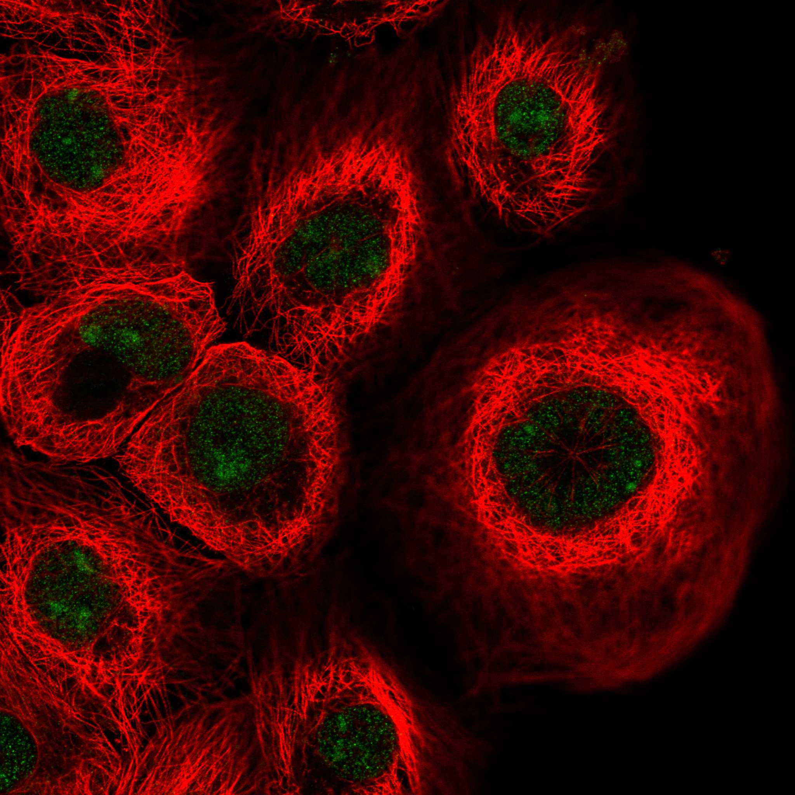

type: protein-evaluation gene: "TTC3" date: 2026-06-01 tags: [protein-scout, nucleoplasm, evaluation] status: scored ---
TTC3 核蛋白评估报告
1. 基本信息
| 项目 | 内容 |
|---|---|
| 基因名 / 别名 | TTC3 / DCRR1, RNF105, TPRD |
| 蛋白全名 | E3 ubiquitin-protein ligase TTC3 |
| 蛋白大小 | 2025 aa / 229.9 kDa |
| UniProt ID | P53804 |
2. 评分总览
| 维度 | 得分 | 新权重 | 加权后 | 关键证据摘要 |
|---|---|---|---|---|
| 核定位特异性 | 8/10 | x4 | 32.0 | HPA Nucleoplasm+Nucleoli (main); GO nucleoplasm/nucleolus IDA:HPA; UniProt Nucleus (ECO:0000269) |
| 蛋白大小 | 1/10 | x1 | 1.0 | 2025 aa, 229.9 kDa，超大蛋白 |
| 研究新颖性 | 6/10 | x5 | 30.0 | PubMed strict=52 |
| 三维结构 | 2/10 | x3 | 6.0 | AF pLDDT 62.1 (40.1% <50); PDB 无 |
| 调控结构域 | 5/10 | x2 | 10.0 | RING finger (E3 ligase) + TPR repeats; E3 ubiquitin ligase 活性依赖于 Akt 磷酸化 |
| PPI 网络 | 4/10 | x3 | 12.0 | STRING DHRS2 (0.874); IntAct 含 APP/DISC1/NR3C1/SMC6/WAPL 等 |
| 加权总分 | 91/180** | |||
| 互证加分 | +0.0 | |||
| 归一化总分 (÷1.83) | 49.7/100** |
3. 详细分析
3.1 核定位证据
| 来源 | 定位 | 可信度 |
|---|---|---|
| UniProt | Nucleus (ECO:0000269 x2), Cytoplasm, Golgi | 实验证据 |
| GO-CC | nucleoplasm (IDA:HPA), nucleolus (IDA:HPA), nucleus (IDA:UniProtKB), cytosol (IDA:HPA) | 多源高置信度 |
| HPA (IF) | Nucleoplasm + Nucleoli (main), Cytosol | Approved, 无IF原图 |
| 文献 | PMID:30203323 — TTC3 forms aggregates in nucleus | 文献支持 |
HPA IF 状态: HPA 分类为 Nucleoplasm + Nucleoli (main) + Cytosol, Approved, 但无 IF 原图。核定位由 UniProt + GO + HPA + 文献四源交叉验证。
结论: TTC3 核定位证据充分，HPA 和 GO-CC 均以 IDA 级别确认 nucleoplasm 和 nucleolus 定位。
3.2 结构与数据源
| 指标 | 数值 |
|---|---|
| AlphaFold | AF-P53804-F1 |
| 平均 pLDDT | 62.1 |
| pLDDT >90 | 12.2% |
| pLDDT <50 | 40.1% |
| PDB | 无 |
| InterPro | IPR011029 (TPR-like), IPR019734 (TPR repeat), IPR001841 (RING finger), IPR013083 (Zinc finger RING/FYVE/PHD) |
| Pfam | PF24525, PF24905, PF19179, PF24812, PF13639 (ring finger) |
超大蛋白（2025 aa），AF 预测质量差（40% 残基 pLDDT<50），无任何 PDB 结构，结构领域为其最大短板。
3.3 研究现状
| 指标 | 数值 |
|---|---|
| PubMed strict (Title/Abstract) | 52 |
| PubMed broad | 86 |
| 别名 | DCRR1, RNF105, TPRD（未用于 scoring） |
关键文献：PMID:33638766 (TTC3 protein quality control, cognitive impairment, 2022), PMID:30203323 (nuclear aggregates, 2019), PMID:30696809 (TGF-beta/SMURF2, 2019), PMID:20059950 (Akt ubiquitination, 2010). 文献以神经疾病和蛋白质量控制为主，近 5 年产出增加。
3.4 PPI 网络（三源综合）
| Partner | Source | Score/Evidence | Relevance |
|---|---|---|---|
| DHRS2 | STRING | 0.874 (textmining 0.870) | 短链脱氢酶 |
| PFN4/PFN3 | STRING | 0.67 (exp 0.065) | Actin 调控 |
| AKT2 | STRING+UniProt | 0.607 (exp 0.335) / 5 exp | Akt 底物/底物识别 |
| GET4 | STRING | 0.619 (exp 0.463) | 蛋白 targeting |
| UBE2D2 | STRING | 0.544 (exp 0.494) | E2 泛素结合酶 |
| AKT1/AKT3 | UniProt | 4 / 2 exp | Akt 家族底物 |
| SMURF2 | UniProt | 2 exp | TGF-beta 负调控 |
| APP | IntAct | Y2H fragment | 阿尔茨海默病相关 |
| DISC1 | IntAct | Y2H fragment | 精神分裂症相关 |
| SMC6 | IntAct | coIP | 染色体结构维持 |
| WAPL | IntAct | coIP | 粘合素调控 |
PPI 以 Akt 家族 (AKT1/2/3) 为核心 — TTC3 的 E3 ligase 活性需要 Akt 磷酸化，且直接泛素化降解磷酸化 Akt，构成终末负反馈调控环。其余互作分散在神经疾病相关蛋白 (APP, DISC1) 和蛋白质量控制系统。
4. 总体评价
TTC3 是超大 RING-type E3 泛素连接酶（2025 aa），拥有良好的核定位证据（HPA nucleoplasm+nucleoli IDA）。其主要优势在于 Akt 通路终末负反馈调控的独特角色和中等文献量（PM=52）。严重劣势为蛋白极大（230 kDa）、无任何 PDB 结构、AF 预测质量差（>40% 残基无序），实验可操作性极低。不建议作为优先靶点，除非能聚焦于特定功能结构域。
5. 数据来源
- UniProt: https://www.uniprot.org/uniprotkb/P53804
- AlphaFold: https://alphafold.ebi.ac.uk/entry/P53804
- PubMed: https://pubmed.ncbi.nlm.nih.gov/?term=TTC3
- Protein Atlas: https://www.proteinatlas.org/ENSG00000182670-TTC3

HPA IF 图像已本地嵌入。
PAE 图像说明: AlphaFold PAE 图像已重新获取并嵌入（见下方 PAE 图像修正块）；结构判断仍结合 pLDDT 与 PAE 综合判断。
<!-- AF_PAE_REPAIR_START --> PAE 图像修正（2026-06-05）: AlphaFold 提供 predicted aligned error 图像；此前“PAE 图像暂无数据”的表述为未获取/未嵌入导致。

<!-- DOMAIN_HUMANPPI_REPAIR_START -->
Domain/SMART 与 humanPPI 补充（2026-06-07）
SMART / UniProt domain
| Source | Data |
|---|---|
| UniProt | P53804 |
| SMART | SM00184;SM00028; |
| UniProt Domain [FT] | 未检出显式 UniProt Domain feature |
| InterPro | IPR011029;IPR011990;IPR019734;IPR056872;IPR056870;IPR043866;IPR056871;IPR001841;IPR013083; |
| Pfam | PF24525;PF24905;PF19179;PF24812;PF13639; |
humanPPI / HPA Interaction
Source: https://www.proteinatlas.org/ENSG00000182670-TTC3/interaction
| Partner | Datasets | AF3/HPA structure |
|---|---|---|
| AKT1 | Intact, Biogrid | true |
| AKT2 | Intact | false |
| AKT3 | Intact | false |
| HSPA4 | Biogrid | false |
| POLG | Biogrid | false |
| RNF214 | Biogrid | false |
| SMURF2 | Biogrid | false |
| UBC | Biogrid | false |
<!-- DOMAIN_HUMANPPI_REPAIR_END -->